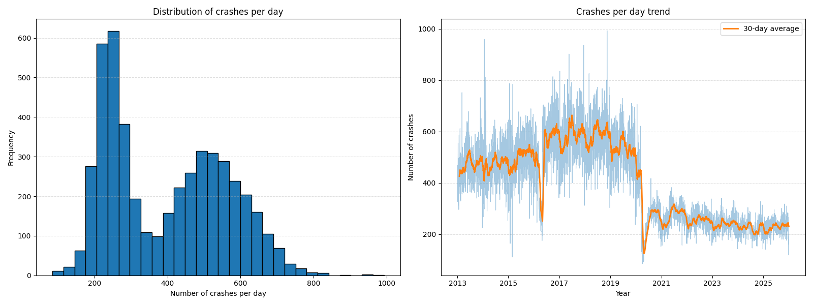
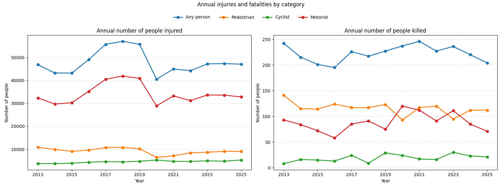
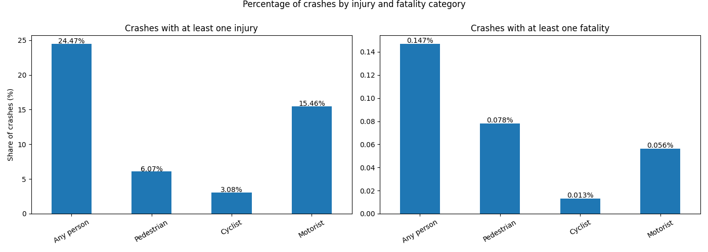
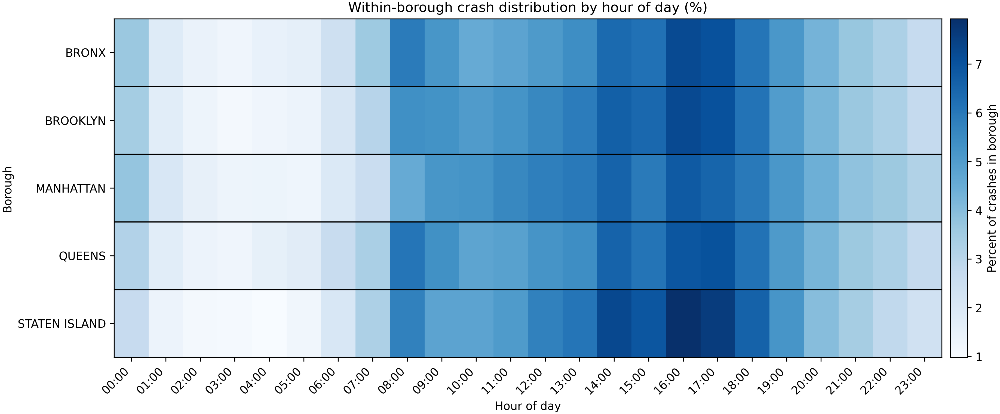
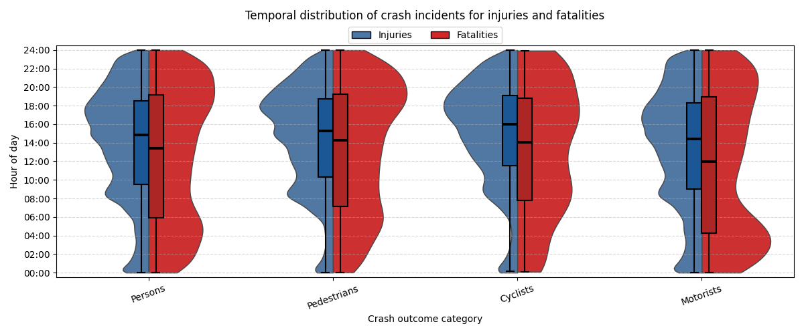
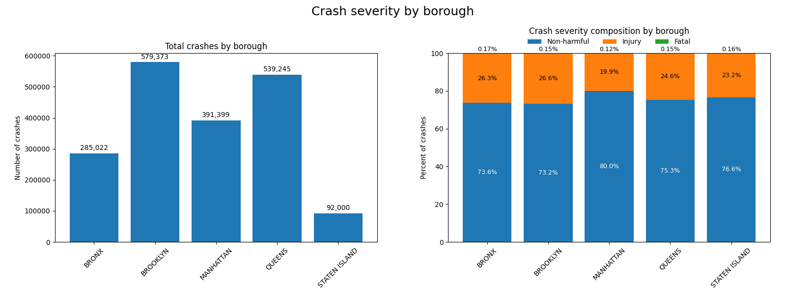
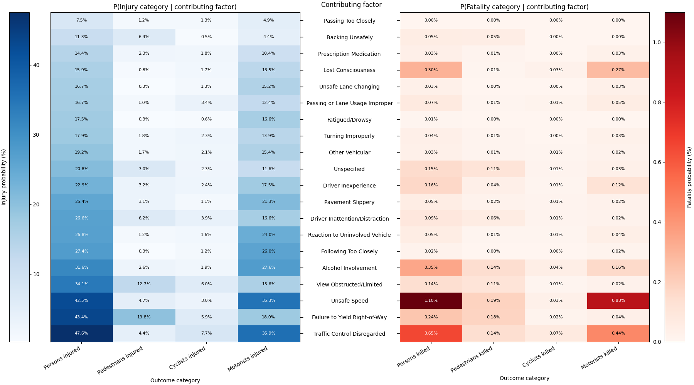

The right panel shows that the number of crashes has large fluctuations throughout the years, where the 30-day average highlights the long term term more clearly. The fluctuations suggest that traffic crashes has some random components that cause variation between the days. The 30-day average is a better indication on actual changes in the pattern which is fairly stable and generally higher from 2013 to 2019 whereafter a large drop occurs in 2020. A possible explanation for this drop in crashe around 2020 is how covid-19 affected transportation and traffic volumes. Official NYC department of city planning reports significant decliens in vehicle miles traveled and vehicle collisions as stay at home measures were introduced (NYC Department of City planning's Transport division. (April 14, 2020)). The pattern appear to not return to the former average and it can be seen that both the average trend and fluctuations remain smaller through 2020-2025. This general pattern is also visible through the left panel in the distributional view. It can be seen that the distribution of crashes appear bimodel with two major peaks. By relating this to the time series the first peak which distribute around a mean of 250 crashes a day represent the time after 2020, whereas the second peak of around 500 crashes a day represent the time before. The continued low in reported crashes after 2020 could be due to new policies that affected crash reportings. After april 6th 2020, vehicle collisions resulting only in property damage are not required to be report to the police, even if drivers still had to to file a seperate MV-104 report with the DMV when damage exceeds 1000$ (New York City police department. (n.d.).). Because the NYC collision dataset is based on police reported collisions, this reporting change may reflect a reduction in minor or property only crashes appearing after 2020. Therefore the the total crash volume changed a lot over time and even though it decreased after 2020, the next figures will show that this does not necessarily mean that the crash harm followed the same pattern.
Explainer-Notebook
The explainer notebook can be found on github as .ipynb here: Open explainer on github or it can be directly downloaded here Download explainer notebook
When and where are harmful traffic incidents concentrated in New York City and who is most affected?
Traffic crashes in New York City and the harm they cause are not evenly distributed. They follows the city's daily rythm and is concentrated in different boroughs and intersections, and affecting road users differently. This article will investigate this narrative by exploring a traffic collision dataset from NYC. The dataset comes from NYC OpenData (NYC Open Data. April 28, 2014) and after initial preprocessing contain roughly 1.88 million crash incidents ranging from 2013 up to and including 2025. The dataset contain motor vehicle crashes in New York that are reported by the police department and documented in the police report (MV104-AN). This police report is required to be filled out for crashes where someone is injured, killed or where there is at least 1000$ worth of damage.
How large is the problem?
This section introduces the scale of traffic crashes in New York City. The figures below give an overview on how crash incidents has changed over time and how often crashes result in injuries or fatalities. This all provides an initial view on the size of the problem and why crash harm is an important topic in public health. Throughout this article, injuries and fatalities are shown for both the different road type users and for "Any person", which represent the total across road users; predestrians, cyclists and motorist.


The left panel illustrates that the number of injured pedestrians and cyclists throughout the years were fairly constant. Pedestrians did drop a bit during 2020, however began steadily increasing to pre 2020 levels. Motorist saw a rather large increase in injuries from 2013 to 2019, whereafter there was a drop. The motorist category increased after 2019 and through 2023-2025 were back to levels that were larger than previous 2014-2015 numbers. The right panel illustrates how the number of fatal crashes changed throughout the years. The figure shows that there are more fluctutations between years, likely due to fatalities being much rarer incidents than injuries. Fatalities do not appear to have seen a drop during the same 2020 point as the general crash count and the general trend looks to be fairly stable with deviations that appear somewhat unexpainable. This suggest that even though the number of traffic crashes has fluctuated a lot throughout and the years and even dropped drastically during and after 2020, the harmful crashes are still a large problem that remain. Considering the reporting change in 2020, aside from the impact of covid in 2020, this figure supports that crash harm is still relativly similar throughout the years indicating that crash harm was less affected than total reported crashes by the post 2020 reporting policy change.

The left panel shows how almost 25% of all crashes contain at least one injury to any person. Splitting this up by road user, shows that mostly motorist appear most often in crashes involvoing injuries at 15.5% of all documented crashes. Followed by this is 6% for pedestrians and 3% for cyclists. The right panel shows that around 0.15% of crashes end up in a fatality, where pedestrians end up with being killed in 0.078% of crashes, motorist with 0.056% and the lowest frequency being cyclist at 0.013%. This suggest that among the documentated crashes, pedestrians appear more often than cyclist or motorist in crashes involving a fatality. This figure illustrates that crash harm is distributed unevenly across road users and that the injury pattern differes from the fatality pattern.
These figures show that the total amount of traffic crashes has changed substantially over time in New York City and in the later years even have had a large decrease. However the injury and fatality incidents has despite this, remained relativly large and unevenly distributed across road users.
When do crashes happen and when are they most harmful?
The scale of crashes in NYC is one part of the story. To fully understand how crash harm distribute throughout the city, it is important to know when they happen. New York City traffic moves daily in rythmes that are shaped by many components such as commuting, work, tourists and nightlife. Crahes may therefore be clustered around particular hours of the day that are most bussiest. This section explores the temporal aspect of crash incidents throughout the boroughs and seeks to find out whether crash and crash harm follow the city clock.

The figure shows that all boroughs differ slightly with their own pattern, however they appear to follow the same broad daily rythm. In every borough, crashes are concentrated during the daytime hours, especially during the late afternoon. The largest concetration of crashes appear between 14:00-19:00, while the morning hours 8:00-13:00 also show a high crash percentage. The evening hours 20:00-24:00 remain noticeble, however with a smaller share of crashes than throughout the business hour. The night and early morning hours from 01:00-07:00 appear to contain the lowest share of crashes throughout all boroughs. The heatmap suggest that crashes do indeed follow the city clock. Crashes appear to cluster in larger shares during commuting and business hours whereas they are much less common during night and early morning, possibly because of the larger quantaty of people in the network during the commuting hours.

The figure suggest that injuries and fatalities follow different time of day patterns. Injuries appear to be concentrated strongly during the daytime and business horus which is consistent with the general crash pattern in the previous figure. The distributions of the road user categories does however appear to differ from eachother. Motorist injuries appear to have a peak during 14:00-18:00, however overall fairly evenly distributed across daytime and evening hours. Pedestrians and cyclists injuries appear to be more concentrated in the later afternoon with large peaks during 18:00 mark.
In constrst to injuries, fatalities appear to not follow the same daytime crash rythm and are more concentrated in the evening and nighttime hours. Pedestrians and cyclists are spread more broadly across the day, however with both showing increased concentration during the later part of the day and into the evening. Motorist fatalities differe the most from the rest and appear to have a bimodel pattern. This pattern has a peak during the night time hours and another during the evening. These observations are broadly consistent with the U.S. Department of transportation who argues that proper lighting and visibility in rural and urban intersections, crosswalks and roadway departures can help save lives (U.S. Department of transporation FHWA. (Last modified Match 2, 2026)).
The figure overall suggest that crash harm is not evenly distributed across the day. Injuries appear to follow the broader daytime activity with most activity during the later afternoon, whereas fatal crashes after shifted further toward the evening and night. In other words, the hours with the most crashes do not necessarily appear to be the hours with the most severe outcomes.
Where do crashes happen and where are they most harmful?
The previous section investigated how crashes and crash harm follow the daily city rythm. The next step is to look at where crashes and crash harm concentrate throughout New York City. This section explores the spatial aspect of crashes, specifially how crashes ditribute across the different boroughs and whether crash severity is different across the boroughs.

The left panel show how some of the boroughs differ substantially in total crash counts. Staten island has by far the fewest recorded crashes compared to the other boroughs. Following this the Bronx has almost three times as many as Staten island and Manhatten with a little over four times as many. Lastly Brooklyn and Queens have the largest quantatity of crashes throughout the years with around six times as many as Staten island. This suggests that crash indicents are not evenly distributed across the city. Part of this may reflect the broader activity scale in these boroughs since Brooklyn is also NYC most populous borough, followed by Queens, Manhatten, Bronx and lastly Staten Island (New York City, Department of city planning. (August, 2021)). The right panel shows that, despite the large differences in crash volumes, most boroughs share a similar crash severity distribution. Most boroughs has 23-26% of all crashes involve an injury, while Manhatten being the lowest with 20%. Fatal crashes remain rare in every borough, with only small differences in their propotions. The figure suggest that even though there is a large difference between the total amount of crashes across boroughs, the harm distrbutes similarily. Manhatten is a noteable exception; it has the third largest amount of crashes but in contrast the crashes result more often in non-harmful incidents.
The figure adds to the spatial story by showing how crash harm is distributed across road user groups within each borough. The left side show the injury flows, where motorist account for the largest share of recorded injuries in every borough. This is especially clear for Brooklyn and Queens, which contribute with the largest amount of injuries in the flow. Pedestrians account for the second largest injury group and cyclist with the smallest. By further inspection it can be seen that Manhatten has a more even contribution of flows to the three road users suggesting that Manhatten crashes are not dominated by motorist as much as the other boroughs. Further most within borough cyclist injuries happen in Brooklyn, Manhatten and Queens, whereas Bronx and Staten island has a very low percentage share of injuries for cyclists.
The right side show the fatality flows, where pedestrians account for the largest share of fatal outcomes, followed closely by motorist and lastly cyclists which is noticeble smaller. This show that the road users that are most oftenly injured are not the ones that are most often killed. Most boroughs have a fairly similar distribution with pedestrians and motorist sharing a large percentage count, while cyclist the lowest. Manhatten and Brooklyn has the largest cyclist percentages with over 10%, while Bronx, Staten island and Queens hover around 3-6%. Further Manhatten appear to have the largest percentage of within borough crashes that result in fatality of 64%, whereas Staten island has the lowest of 40%.
Overall the figure suggest that crash harm is unevenly distributed across boroughs, but also across the different road type users. Motorists are dominated in the injury cateogry, while predestrians apepar most often in fatal crashes. This aligns with the previous figure, that the crash harm is not evenly shared spatially or among the road users.
What contributing factors are associated with crashes?
Thus far, the story has touched upon how crash is unevenly distributed across time, space and road user groups. Further the scale of the problem has been established in the beginning. To continue the story and intepretation, this section revolves around the primary contributing factors for the crashes. These factors do not provide a complete explanation of the crash, however gives insight in the conditions that are associated to crashes.

The figure further supports that injuries are substantially more common than fatalities given that almost all reported factors has injury probabilities higher than fatality probalities. It is also seen that the factor "Unspecified"; which represent an absense of reported factor appears relativly often, including for some injury outcomes and pedestrian fatalities. This indicates that not all severe crashes has a reported contributing factor.
By inspecting the injury panel it can be seen that the probabilities are spread across several factors, rather than being dominated by a small group. Traffic control disregarded and unsafe speeds are the two factors that are most associated with motorist injuries, while pedestrian injuries most commonly associate with failure to yield right of way and obstructed view. Cyclist injuries appear to be concentrated around a smaller set of factors, including traffic control disregard, failure to yield right of way and obstructed view.
The fatality panel is sparser and has much smaller probabilities. This might reflect how rare the reported fatality outcomes are in the dataset. However there are a few factors that stand out. The most noticeble is unsafe speeds which is the largest associated factor for motorist fatalities. Motorist fatalities are also associated with disregarding of traffic control and alchol involvement, whereas pedestrian fatalities are spread across more factors, however unsafe speed and failure to yield being the most prominent. Lastly cyclist fatality probabilities are generally low as expected due to the low counts, however the most dominant being traffic control disregard.
Many of these findings are consistent with external traffic saftey evidence. NHTSA identifies speeding a large contributor to harmful crashes with 28% of fatal crashes and 13% of injury crashes being speeding-related in the US in 2023 (U.S. Department of transporation NHTSA. (June 2025).). Further NHTSA also documents how in 2023, 30% of all car crashes resulting in fatalities had at least one alchohol impaired driver in the US (U.S. Department of transporation NHTSA. (May 2025)). Furhermore FHWA also notes that disregarding traffic control, including running red lights is a major contributor to serious intersection crashes (U.S. Department of transporation FHWA. (n.d.)). Overall the figure reveals that many contrubiting factors repeats. There appear to be a broad pattern of factors contributing to injuries compared to the fatality outcomes which are rarer and more concentrated around a smaller number of factors including alchohol involvement, unsafe speeds and traffic control disregard. Further it also shows that the factor profiles differ across the road user groups, suggesting that the conditions associated with crash harm is not identical across pedestrians, cyclists and motorists. This indicates that crash harm is not only formed by when and where they happen but also by which factors that are present when they occur.
Explore crash harm in New York City
The previous sections has presented the main points of the story namely that crash harm in NYC is unevenly distributed temporally, spatially, across user groups and reported contributing factors. This final section is now gonna gonna let the user explore an interactive map of New York City to further analyze the dataset. The interactive map let the reader compare borough level statistic and summaries, inspect injury and fatality hotspots, view documented fatal crashes and explore intersections that has high crash activity.
It is recommened to start by viewing the borough level summaries, then compare the injury and fatality hotspots to explore differences both generally and for road users. Thereafter the fatal crash points show severe individual crash events and lastly the dangerous intersections to see how crashes concentrate in the road network.
Conclusion
In conclusion, harmful traffic crashes are not evenly distributed temporally, spatially or across road users in New York City. Even though crash counts dropped after 2020, the issue of crash harm remained an issue. Crashes and injuries follow the cities daily rythm and are concentrated during the day hours and late afternoon, whereas fatalities occur mainly during the evening and night hours. Brooklyn and Queens account for the largest crash volumes, however crash harm is present throughout all boroughs. The analysis revealed that motorists account for most injuries, while pedestrians appear over representated among fatalities. Reported contributing factors such as unsafe speed, failure to yield, traffic control disregard and alchohol involvement further suggest that severe outcomes are associated with specific crash conditions. Thereby, the story shows how crashes in New York City can not be understood from counts alone. Crash harm appear to deppend heavily on when, where and who is invovled and which conditions were present during the crash.
Contributions
This exam project is made by Magnus Elfenbein (s214710) in the DTU course 02806.
References
NYC Open Data. (April 28, 2014). Motor vehicle collisions - crashes. City of New York. Retrieved April 7, 2026 https://data.cityofnewyork.us/Public-Safety/Motor-Vehicle-Collisions-Crashes/h9gi-nx95
NYC Department of City planning's Transport division. (April 14, 2020). Covid-19 impacts on transportation. City of New York. Retrieved May 12, 2026. https://www.nyc.gov/assets/planning/download/pdf/planning-level/transportation/covid19-transportation/20200414.pdf
New York City police department. (n.d.). Non-Injury Vehicle Collisions. Retrieved May 12, 2026. https://www.nyc.gov/site/nypd/services/vehicles-property/non-injury-vehicle-collisions.page
U.S. Department of transporation FHWA. (Last modified Match 2, 2026). Nighttime Visibility for Safety. Retrieved May 12, 2026. https://www.fhwa.dot.gov/innovation/everydaycounts/edc_7/nighttime_visibility.cfm
New York City, Department of city planning. (August, 2021). 2020 Census results for New York City. Retrieved May 12, 2026. https://www.nyc.gov/assets/planning/download/pdf/planning-level/nyc-population/census2020/dcp_2020-census-briefing-booklet-1.pdf
U.S. Department of transporation FHWA. (n.d.). If You Run a Red Light You Are Betting More Than You Can Afford to Lose. Retrieved May 12, 2026. https://highways.dot.gov/media/11401
U.S. Department of transporation NHTSA. (May 2025). 2023 Data: Alcohol-Impaired Driving. Retrieved May 12, 2026. https://crashstats.nhtsa.dot.gov/Api/Public/Publication/813713
U.S. Department of transporation NHTSA. (June 2025). Traffic Safety Fact Report: 2023 Data - Speeding. Retrieved May 12, 2026. https://crashstats.nhtsa.dot.gov/Api/Public/Publication/813721